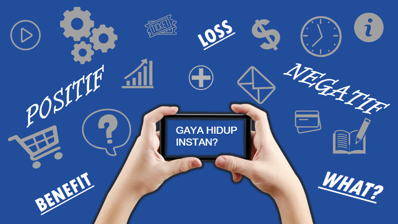

Gaya Hidup Instan #Part 1

Gaya hidup adalah cara orang mengekspresikan pola kebiasaannya lewat
kegiatan/pekerjaan sehari-hari. Dilansir dari Wikipedia, gaya hidup
atau dalam bahasa Inggris: lifestyle, adalah bagian dari kebutuhan
sekunder manusia yang bisa berubah bergantung zaman atau keinginan
seseorang untuk mengubah gaya hidupnya. Ini berarti gaya hidup
merupakan hal yang berkaitan erat dengan perkembangan zaman.
Gaya Hidup Instan #Part 2
Di zaman dengan segala kemajuan teknologi yang ada, membuat kita
mudah dalam melakukan kegiatan/pekerjaan. makanan cepat tersedia di
warung-warung, transportasi dapat dengan mudah diakses lewat
internet, dan segala macam hal kini menjadi serba praktis. Itulah
yang akhirnya disebut sebagai instan. Lalu, bagaimana bila seseorang
mengikuti gaya hidup instan?
Positif-Negatif Gaya Hidup Instan Gaya hidup instan adalah
cara orang melakukan kegiatan/pekerjaan dengan cara yang cepat dan
mudah. Dilansir dari kompasiana.com, gaya hidup instan adalah gaya
hidup di mana orang-orang menginginkan segalanya serba cepat dan
serba mudah serta efisien dengan cara-cara yang instan. Banyak dari
kita yang tahu bahwa hidup di zaman dulu itu susah dan lemot untuk
melakukan suatu kegiatan/pekerjaan sehari-hari. Berbeda di zaman
sekarang. Kini, apa-apa yang kita lakukan bisa serba instan.
Artinya, bisa dengan mudah dan cepat dilakukan sehingga sangat
efisien untuk kegiatan/pekerjaan sehari-hari.
Gaya Hidup Instan #Part 3
Gaya hidup instan menjadi hal yang berpengaruh pada diri kita
sendiri untuk membentuk kepribadian diri kita. Banyak sisi positif
yang di dapat dari gaya hidup instan, tapi banyak juga sisi negatif
yang di dapat bagi diri kita. Dirangkum dari video yang ditonton
oleh penulis berjudul “Pengaruh Gaya Hidup serba Instan” yang ada di
youtube.com, diantaranya yang tertera pada tabel berikut.
Aspek Positif dan Negatif Gaya Hidup Instan
| Positif |
Negatif |
| mudah mencari informasi di internet |
males belajar atau beraktivitas |
| mempercepat pekerjaan |
kecanduan dunia maya |
| hemat uang transport dan waktu |
individualis atau lebih mementingkan diri sendiri |
| memajukan peradaban manusia |
kurang bersosialisasi |
| generasi semakin cerdas inisiatif kreatif dan inovatif |
hidup hedonis atau mengutamakan kenikmatan duniawi |
| keterbukaan informasi yang Mask |
matrealistis |
| sistem pendidikan formal makin maju |
melupakan proses |
| memudahkan komunikasi antar wilayah |
adanya plagiatisme atau tinggal copy-paste |
Sumber:
https://www.youtube.com/watch?v=QyVPEn8Y4Xc
Berdasarkan apa-apa yang sudah disampaikan di atas, gaya hidup
instan tentu bisa sangat berpengaruh bagi diri kita. Oleh karena
itu, kita hanya perlu mengambil kebiasaan yang baik agar menjadi hal
yang baik. Sebisa mungkin kita memilih dan mengambil sisi positif
yang ada dan menghindari sisi negatifnya. Semoga bermanfaat.